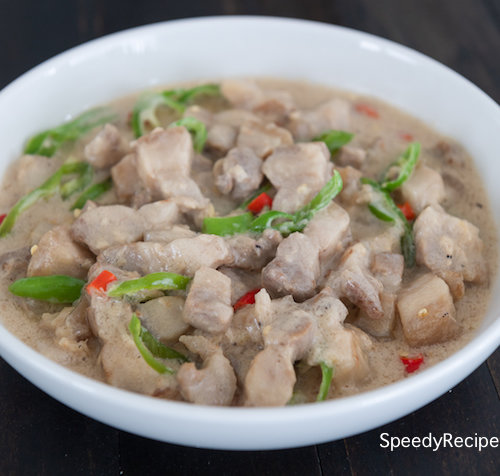

Do you want to try out the ultimate Filipino comfort food?
Bicol Express is one of the tastiest Filipino comfort food to cook, and it's a household name in the Filipino cuisine!
What is Bicol Express?
Bicol express is a spicy Filipino stew consisting of bite sized pieces of pork with chilies, coconut milk, shrimp paste (bagoong), onions, tomato and garlic. The dish is named after the train in the Bicol region of the Philippines, known for its spicy food.
Ingredients:
- 2 lbs. pork belly sliced into strips
- 2 cups coconut milk
- 2 cups coconut cream
- 1/2 cup shrimp paste bagoong alamang
- 4 cloves garlic crushed
- 6 pieces Thai chili pepper chopped
- 1 thumb ginger minced
- 1 piece onion chopped
- 1 pieces Seranno pepper sliced
- 1 cup water optional
Instructions
- Combine ginger, garlic, onion, Thai chili pepper, pork, and coconut milk in a pan. Mix well. Cover the pan and turn the heat to on. Let the mixture boil.
- Remove the cover. Stir. Add half of the bagoong and pour around 1 cup of coconut cream and a cup of water. Stir and adjust the heat to low. Cook until the sauce reduces to a quarter (around 50 minutes).
- Add the remaining coconut cream and bagoong alamang (as needed). Also add the Serrano peppers.
- Continue cooking in low heat until the sauce thickens
- Transfer to a serving plate and serve with warm rice.
>Return to main page